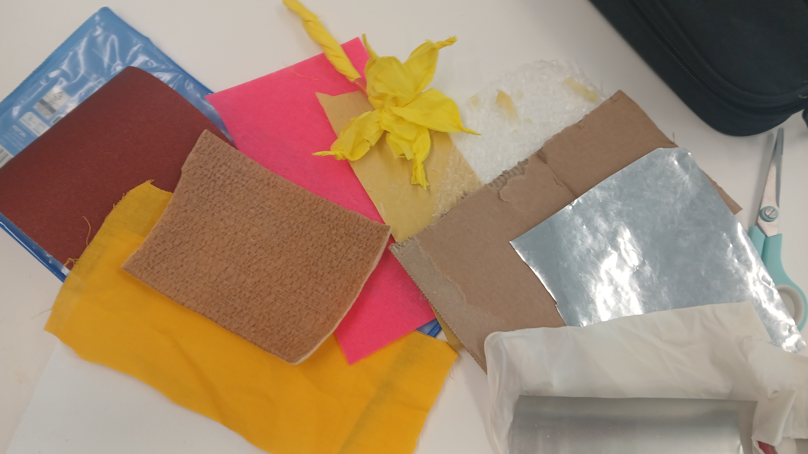
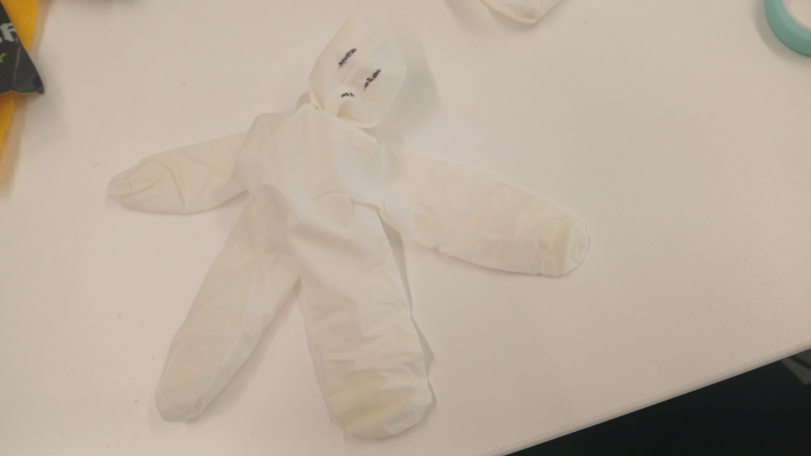
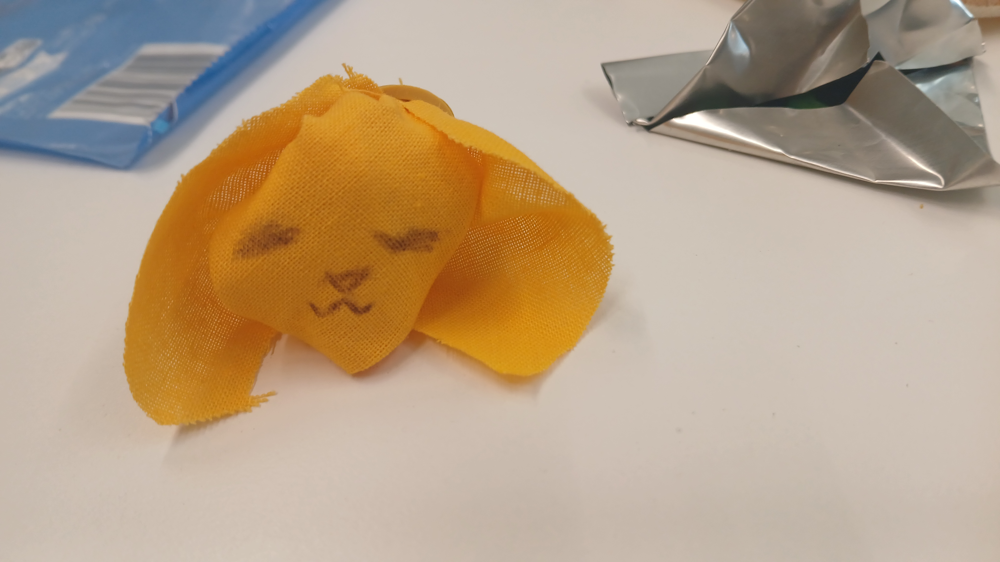
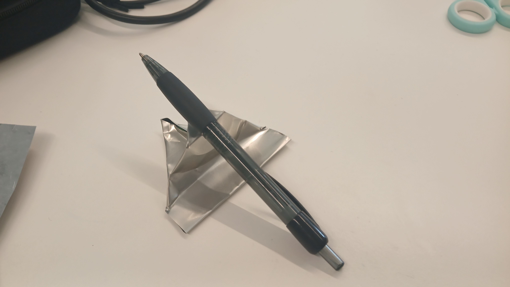
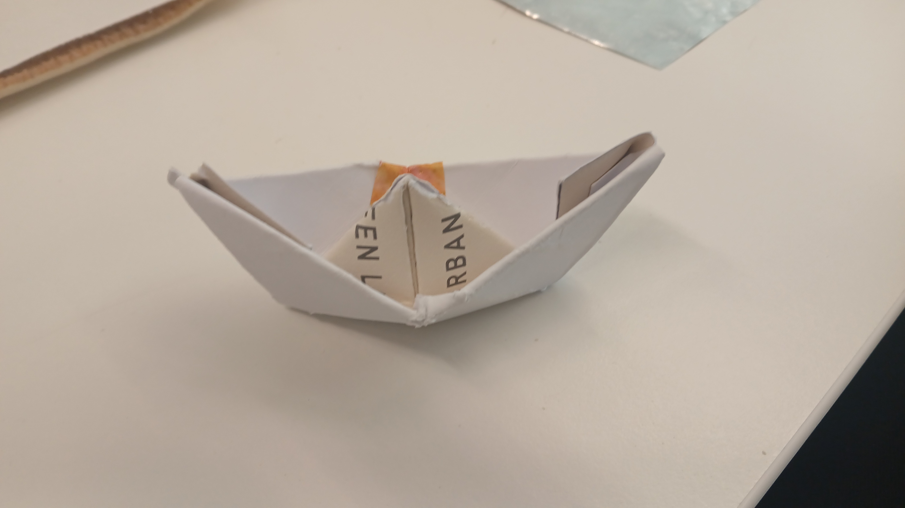
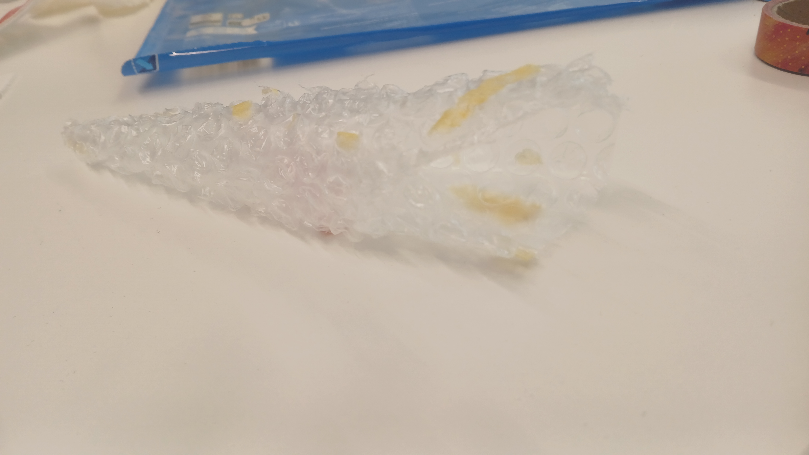

Assignment
Prototyping, sept 2026
Bring in 15 flat materials, and turn them into something 3D.
Tags
3D physical material study sketch Prototyping
Bring in 15 flat materials, and turn them into something 3D.
3D physical material study sketch Prototyping
Gathering 15 materials was fun, I really tried to look around my room and see what different flat materials I had laying around, and was very pleased to find enough that I think are materially unique.
The first picture has my crepe-paper already turned into a flower.








Shown left -> right, top -> bottom in the order they've been made. The crepe flower was because the material reminded me of childhood crafts, and how flexible yet shape-holding the material is. I then proceeded to turn a latex glove into a little person. The material actually was not as good as I thought it would be at holding in air, which is why they have a :/ expression. Then I turned my bit of yellow fabric into the head of a bunny. The latex glove made me want to make another being, and the fabric holds the round shapes and floppy-ness of the ears well.
The next two are the ones I am least satisfied with. I folded a cutout of an aluminium can into a pen-holder, and a thick paper card into a boat. I intended the penholder to be a phoneholder because I thought the aluminium would be stronger. Nonetheless I like its rigidity. I did the paper boat because for the final prototypes of this course, I've been having origami on the back of my mind. This paper proved to be a bit too thick to properly make an intricate shape.
Following are two structures based around the ability of the material to get ripped in very straight lines. The first one is a soft material, so I ripped it into 4 strips and made a misaligned tower. The second is a canvas material, and I folded it into a triangle instead of its square base shape. Lastly, I made a bit of bubblewrap into a bouquet holder for my flower. I was testing the different ways I could roll it up, and realized it fit well with my previous item.
Overall I fairly liked this experiment, it's very open and made me analyze what specifically I liked about a material! And also, that sometimes my expectations are wrong, or better than I expected!